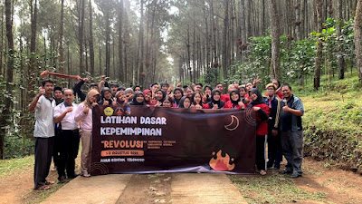
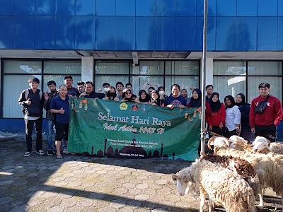
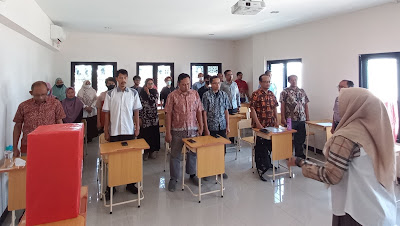

Artikel Terbaru
Update artikel dari STIMIK Bina Patria Magelang
Calon Senat Mahasiswa STMIK Bina Patria Ikuti Latihan Dasar Kepemimpinan
Puluhan mahasiswa Sekolah Tinggi Manajemen Informatika dan Komputer (STMIK) Bina Patria mengikuti Latihan Dasar Kepemimpinan Mahasiswa (LDKM), Senin sampai Rabu (1-3/8/2022). Kegiatan itu bagian dari masa orientasi bagi calon anggota Senat Mahasiswa. Ketua Senat Mahasiswa STMIK Bina Patria, Subkhan Dimas mengatakan, LDKM tahun ini bertajuk Membentuk Karakter Kepemimpinan Mahasiswa yang Responsif, Kompeten, Kuat, dan Organisasi yang Hebat. "LDKM ini memberikan banyak manfaat bagi peserta dan panitia, antara lain membentuk jiwa kepemimpinan, melatih kejujuran, percaya diri, melatih kerja sama, dan menambah wawasan," ujarnya dalam keterangan tertulis, Kamis (4/8/2022). Selama tiga hari, LDKM digelar di kampus setempat dan Bumi Perkemahan Kampoeng Pinus, di Kecamatan Ngablak, Kabupaten Magelang. Masih dalam keterangan tertulis itu, hari pertama ada pemaparan materi tentang kepemimpinan dari Pembantu Ketua III Bidang Kemahasiswaan STMIK Bina Patria Sugeng Wahyudiono. Kegiatan berlanjut dengan pemberangkatan ke tempat kemah dan pendirian tenda. Lalu, pemaparan materi soal bertahan hidup oleh staf kampus, Andika Setiawan, dan materi keorganisasian dari Hubungan Masyarakat STMIK Bina Patria Kanafi.. Acara puncak dari LDKM adalah outbond dan widegame bertema survival di alam terbuka.
Rayakan Idul Adha 1443 H, STMIK BIPA Adakan Pembagian Daging Hewan Qurban Ke Warga
Memperingati Hari Raya Idul Adha 1443 Hijriah tepatnya pada tanggal 10 Juli 2022, STMIK Bina Patria Magelang menyelenggarakan penyembelihan hewan qurban di kampus setempat. Kegiatan ini mengusung tema “Bersatu untuk Berqurban, Bersama berbagi Kebaikan”. Hewan qurban berasal dari para dosen dan karyawan serta mahasiswa di lingkungan STMIK Bina Patria. Penyembelihan dilaksanakan di halaman kampus 1 dihadiri Plt. Ketua Moch Ali Machmudi, M.Kom, Pembantu Ketua III Bidang Kemahasiswaan, Kepala Humas beserta jajaran dosen staf dan civitas akademika. Kegiatan ini sudah menjadi agenda rutin dan program kerja STMIK Bina Patria melalui Kerohanian Islam Senat Mahasiswa. Hewan kurban berjumlah 6 ekor kambing , sementara ada seekor kambing dalam keadaan hidup diserahkan ke dusun Dumpoh Magelang Utara Kota Magelang. Kambing yang disembelih di Kampus itu selanjutnya didistribusikan kepada warga sekitar yang membutuhkan melalui sistem kupon yang sudah dibagikan beberapa hari sebelumnya. Yang menarik dari kegiatan ini adalah semua senat dari bermacam agama ikut terjun langsung dalam pembagian qurban ke warga sekitar dengan menggunakan sistem kupon. Dalam wawancaranya disela sela penyembelihan hewan qurban Plt. Ketua STMIK Bina Patria Magelang Moch Ali Machmudi, M.Kom menyampaikan bahwa kegiatan ini merupakan kegiatan social keagamaan bagaimana kita semua bisa memberikan manfaat bagi warga sekitar,” setidaknya ini menjadi moment tahunan sebagai bentuk latihan yang dapat dijadikan contoh bagi seluruh mahasiswa agar setelah nanti lulus terjun di masyarakat bisa selalu memberikan manfaat dan peduli terhadap warga sekitar” imbuh Ali. Warga yang mendapatkan kupon antusias ikut berdesak desakan antri untuk mendapatkan daging qurban di kampus setempat. Kegiatan ini berjalan lancar dan sukses semua daging qurban dapat tersalurkan.
STMIK Bina Patria Gelar Pemilihan Ketua Baru
STMIK Bina Patria menggelar kegiatan demokrasi pendidikan politik dengan di adakannya pemilihan Ketua STMIK Bina Patria periode 2020-2024. Kegiatan pemilihan ini dilaksanakan pada Selasa 28 Juni 2022 di Kampus 2 setempat. Kegiatan pemilihan ini merupakan agenda 5 tahunan dalam rangka untuk mengisi kekosongan Ketua yang mana sebelumnya diisi oleh Plt Ketua dijabat oleh Moch Ali Machmudi, M.Kom selama 5 bulan yang saat itu mejadi Kaprodi Manajemen Informatika agar roda menajemen tetap berjalan. Dalam pemilihan ini yang terpilih menjadi calon ada empat pilihan antara lain Moch Ali Machmudi, M.Kom (Kaprodi MI yang juga menjabat Plt. Sebelumnya), Wahyu Priyoatmoko, M.Kom (Kaprodi TI), Fatimah Nur Arifah, M.Kom (Kaprodi SI) dan Farida Yunita, M.T (Sek.Prodi MI). Sebelum dilakukan pemilu dengan pencoblosan langsung, telah diadakan pembukaan berupa sambutan dan penyampaian visi misi dari setiap calon. Acara ini berlangsung sangat meriah dengan peserta pencoblosan adalah Dosen beserta Staf. Secara terpisah Ketua Panitia Seleksi Pemilihan Ketua STMIK Bina Patria Gatot Susilo, M.Kom menyampaikan bahwa ini merupakan rangkaian dari demokrasi politik, “ dari calon yang nanti terpilih selanjutnya akan kami serahkan kepada Yayasan sebagai pertimbangan yang nanti ditetapkan” imbuhnya. Sebelum dilaksanakan pencoblosan juga dilakukan pemilihan oleh mahasiswa terhadap keempat calon tersebut melalui link yang telah dibagikan dengan memilih Dosen favorit. Menurut Plt Ketua STMIK BIPA Moch Ali Machmudi, M.Kom menyampaikan kegiatan ini diharapkan menjadi ajang demokrasi yang baik, transparansi dan Good Governance, “ imbuhnya.